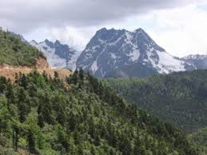
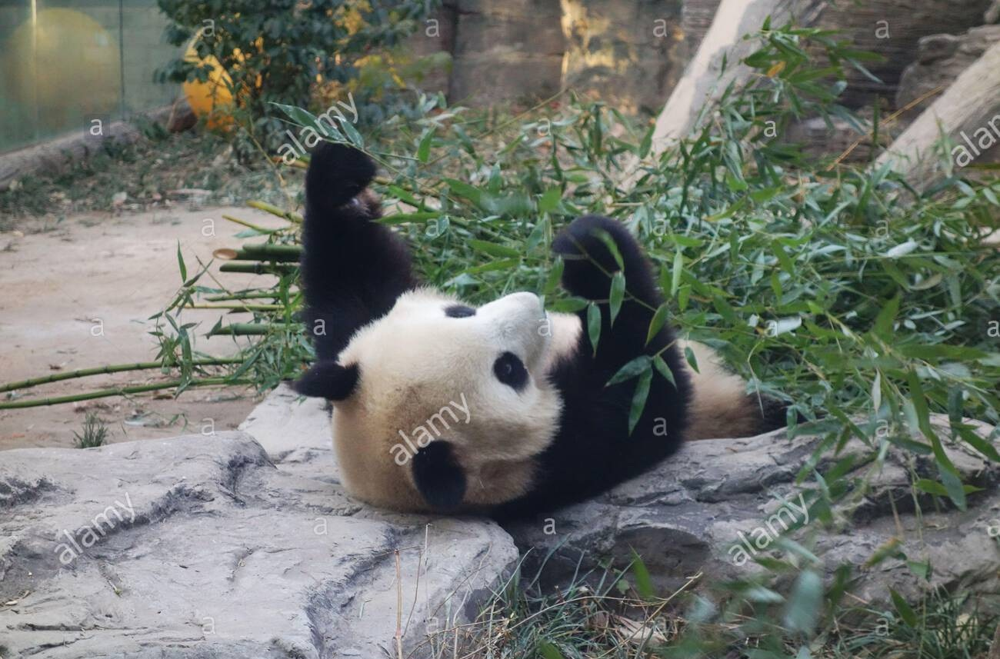

Relieve
El predio de interés es prácticamente plano, con una ligera pendiente descendente hacia el Oriente con relieve
ondulado en el que se alternan pequeños lomeríos y rejolladas con una variación entre la sección más elevada y la
más baja menor a 2 m. La pendiente media oscila entre 0 y 5 %.
Clima
El clima es denominado cálido subhúmedo con lluvias en verano. Este clima, es el más húmedo de los subhúmedos, con precipitación media anual entre 1,500 y 2,000 mm y temperatura media anual entre 26 y 28 °C. El subtipo climático Aw2 se reconoce como el más húmedo de los subhúmedos.
Una característica que sirve como referencia para la clasificación en este grupo climático es que la temperatura
media del mes más frío es mayor de 18 °C.
Suelo
El tipo de suelo en el predio es Litosol más Rendzina de clase textural media, que se caracteriza por presentar profundidades menores de 10 cm, limitados por la presencia de rocas calcáreas que son muy superficiales. Son suelos de color café claro a casi negro y por su textura y características presentan fuertes restricciones para su
utilización con fines agrícolas, sin embargo, presentan buen drenaje, lo que favorece la infiltración de las aguas
pluviales.
En las partes más bajas del terreno predominan las rendzinas que son arcillosos y poco profundos. Estos presentan
fase física (lítica somera), pero no química y tienen buen drenaje. Son moderadamente susceptibles a la erosión.
Hidrografia
En el predio como en el Municipio de Solidaridad se carece de corrientes de agua superficiales. Los cenotes, lagunas
y aguadas son las únicas manifestaciones de agua superficial, los dos últimos tienen su origen en zonas donde se
forman llanuras de inundación, que permanecen temporal o permanentemente inundadas.